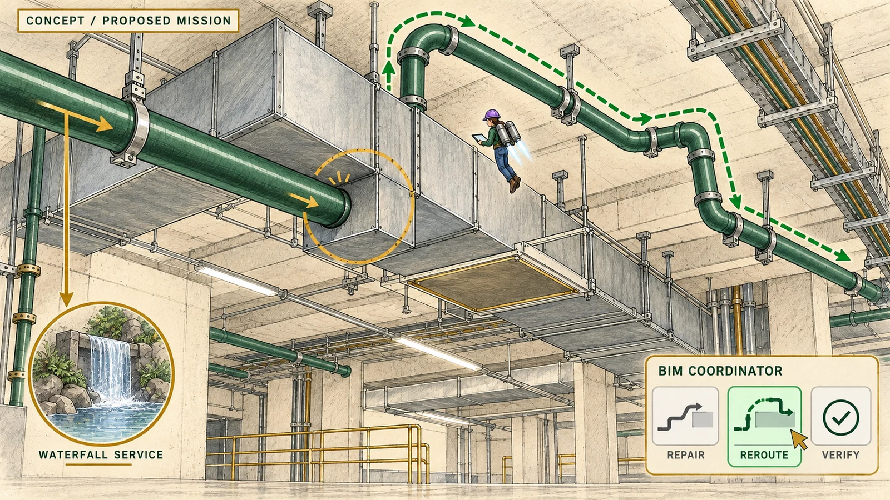

MISSION 01 / CONCEPT
BIM Coordinator
Shrink down. Find the clash.
THE MISSION
A waterfall service pipe crosses an air duct and blocks access.
Travel to a fictional service corridor and use a shrink jetpack to see the problem up close. Find a route that leaves enough room for maintenance.
This mission is an idea for the next version. The scene and artwork are concepts, not proof of the real Jewel’s services or a finished game feature.
THREE ISSUES TO SOLVE
Start with one star and work your way up to three. Each issue is a proposed game idea.
Pipe meets duct
A waterfall pipe crosses an air duct.
What you do: Use the shrink jetpack to find the clash and choose a clear pipe route from the interaction menu.
Blocked by a beam
A second pipe route passes through a support beam.
What you do: Fly along the overhead services, find the clash and select a route around the beam.
No room to maintain
A pipe avoids the duct but blocks access to a valve.
What you do: Compare the repair options and choose one that clears the duct and leaves the valve accessible.
YOUR KEY
After solving all three issues: A checked route earns the BIM key to bring back to the Director.
Work as a team. Share the new route with the M&E and Technical teams.
